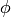
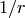

設定は単体の JSON で与えられる。 JSON の各フィールドは以下のとおりである。
分類に使用するアルゴリズムを指定する。 以下のアルゴリズムを指定できる。
| 設定値 | 手法 |
|---|---|
| "perceptron" | パーセプトロン法を利用する。 |
| "PA" | Passive Aggressive (PA) を利用する。 [Crammer06] |
| "PA1" | PA-I を利用する。 [Crammer06] |
| "PA2" | PA-II を利用する。 [Crammer06] |
| "CW" | Confidence Weighted Learning を利用する。 [Dredze08] |
| "AROW" | Adaptive Regularization of Weight vectors を利用する。 [Crammer09b] |
| "NHERD" | Normal Herd を利用する。 [Crammer10] |
| "NN" | nearest_neighbor を利用する。 |
アルゴリズムに渡すパラメータを指定する。 method に応じて渡すパラメータは異なる。 なお、各アルゴリズムの regularization_weight パラメータはアルゴリズム中における役割が異なるため、アルゴリズム毎に適切な値は異なることに注意する。
| unlearner: | 忘却機能に利用するUnlearnerのアルゴリズムを指定する。 忘却機能を利用しない場合、 このパラメータを省略する。 Unlearner で説明される unlearner を指定する。 ここで指定された方法に基づいてラベルを忘却する。 method が "NN" の場合、ラベルではなく個々のデータを忘却する。 |
|---|---|
| unlearner_parameter: | |
| 忘却機能に利用するUnlearnerに渡すパラメータを指定する。 Unlearner で説明される unlearner_parameter を指定する。 unlearner を設定する場合、 unlearner_parameter の指定は必須である。 ここで指定された件数以上のラベルまたはデータを忘却する。 | |
これら2つのパラメータは 省略可能 である。
| regularization_weight: | |
|---|---|
学習に対する感度パラメータを指定する。 大きくすると学習が早くなる代わりに、ノイズに弱くなる。 元論文 [Crammer06] における に相当する。 (Float)
|
|
| regularization_weight: | |
|---|---|
学習に対する感度パラメータを指定する。 大きくすると学習が早くなる代わりに、ノイズに弱くなる。 元論文 [Crammer06] における に相当する。 (Float)
|
|
| regularization_weight: | |
|---|---|
学習に対する感度パラメータを指定する。 大きくすると学習が早くなる代わりに、ノイズに弱くなる。 元論文 [Dredze08] における  に相当する。 (Float)
|
|
| regularization_weight: | |
|---|---|
学習に対する感度パラメータを指定する。 大きくすると学習が早くなる代わりに、ノイズに弱くなる。 元論文 [Crammer09b] における  に相当する。 (Float)
|
|
regularization_weight: 学習に対する感度パラメータを指定する。 大きくすると学習が早くなる代わりに、ノイズに弱くなる。 元論文 [Crammer10] における に相当する。 (Float)
- 値域: 0.0 < regularization_weight
| method: | 近傍探索に使用するアルゴリズムを指定する。 使用可能なアルゴリズムの一覧は Nearest Neighbor を参照のこと。 |
|---|---|
| parameter: | アルゴリズムに渡すパラメータを指定する。 パラメータの一覧は Nearest Neighbor を参照のこと。 |
| nearest_neighbor_num: | |
スコア算出時に使われるデータの数を指定する。 (Integer)
|
|
| local_sensitivity: | |
スコア算出時に使われる感度パラメータを指定する。 0 の場合は近傍探索で得られた全てのデータを同じ重みで評価し、 大きくすると距離の近いデータをより重視するようになる。 (Float)
|
|
特徴変換の設定を指定する。 フォーマットは データ変換 で説明する。
{
"method" : "AROW",
"parameter" : {
"regularization_weight" : 1.0
},
"converter" : {
"string_filter_types" : {},
"string_filter_rules" : [],
"num_filter_types" : {},
"num_filter_rules" : [],
"string_types" : {},
"string_rules" : [
{ "key" : "*", "type" : "str", "sample_weight" : "bin", "global_weight" : "bin" }
],
"num_types" : {},
"num_rules" : [
{ "key" : "*", "type" : "num" }
]
}
}
| パラメタ: |
|
|---|---|
| 戻り値: | 学習した件数 (data の長さに等しい) |
学習しモデルを更新する。 labeled_datum は、 datum とその label の組である。 この API は labeled_datum をリスト形式でまとめて同時に受け付けることができる (バルク更新)。
| パラメタ: |
|
|---|---|
| 戻り値: | estimate_result のリストのリスト (入れられた datum の順に並ぶ) |
与えられた data から、ラベルを推定する。 この API は、 datum をリスト形式でまとめて同時に受け付けることができる (バルク分類)。
| 戻り値: | 現在登録されているラベルの一覧 |
|---|
登録されているラベルの一覧を返す。
| パラメタ: |
|
|---|---|
| 戻り値: | 追加に成功した場合 True 既にラベルが存在した場合 False |
新しいラベルを追加する。 既に同名のラベルが登録されていた場合失敗する。 ラベルは train 実行時にも自動的に追加される。
| パラメタ: |
|
|---|---|
| 戻り値: | 消去に成功した場合 True ラベルが存在しなかった場合 False |
ラベルを消去する。 成功時に True 失敗時に False を返す。